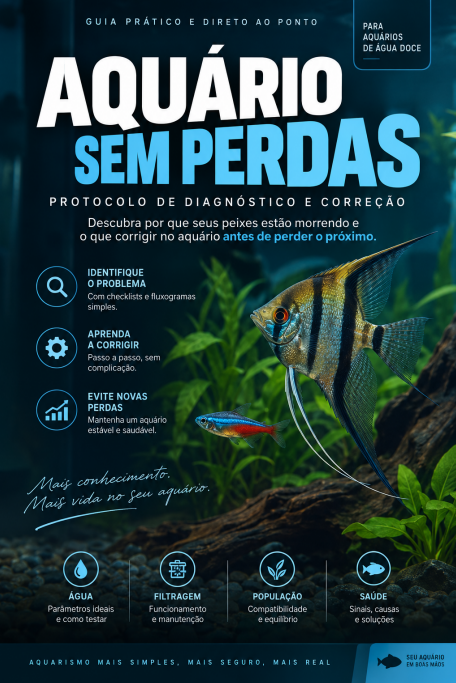
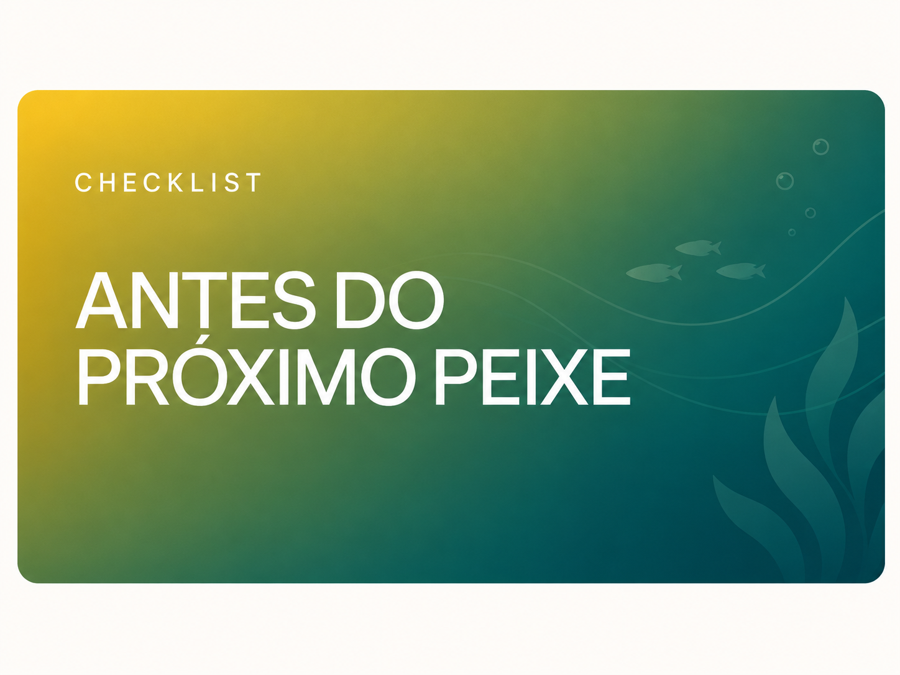

OBSERVE
Comportamento e estado do aquário.
● PARA QUEM JÁ PERDEU UM OU MAIS PEIXES
Descubra o que pode estar errado no seu aquário e saiba o que verificar antes de perder o próximo.
Um protocolo prático de diagnóstico para investigar água, ciclagem, filtragem, oxigenação, alimentação, população e outras causas comuns sem fazer mudanças aleatórias.
QUERO INVESTIGAR MEU AQUÁRIO →


Não compre outro peixe antes de investigar o aquário.
Uma sequência simples para saber o que observar, o que verificar e qual passo executar primeiro.
Comportamento e estado do aquário.
Sinais e pontos de atenção.
Os pontos certos em ordem lógica.
O que estiver inadequado.
Veja se a situação melhora.
Responda perguntas simples e vá direto aos pontos que merecem investigação.
Você começa pelo problema que está acontecendo no seu aquário — não pela quantidade de páginas.
SIM ↓
Verifique ciclagem,
amônia e nitrito.
NÃO ↓
As mortes começaram
depois de uma mudança?
SIM ↓
Parâmetros, aclimatação
e compatibilidade.
NÃO ↓
Água, filtragem,
oxigenação e população.
Onde podem surgir sinais de desequilíbrio.
✓ amônia ✓ nitrito ✓ nitratoO que verificar quando o aquário é novo ou instável.
✓ ciclo ✓ bactériasSe filtro, mídias, fluxo e oxigenação merecem atenção.
✓ mecânica ✓ biológicaQuantidade, espaço e convivência dos peixes.
✓ quantidade ✓ tamanho adultoExcesso, frequência, restos e impacto na água.
✓ excesso ✓ frequênciaRotina sem remover o que mantém a estabilidade.
✓ trocas ✓ filtro ✓ mídias

Um protocolo de consulta para usar sempre que algo parecer errado — com páginas reais, fluxogramas e checklists.
Ferramentas práticas para consultar, registrar e acompanhar o aquário.
Registre parâmetros, alimentação, manutenção, mudanças e comportamento.
Consulte quais pontos merecem atenção primeiro quando notar algo diferente.

Verifique estabilidade, parâmetros, filtragem, espaço e compatibilidade.
Não. É um protocolo de consulta com fluxogramas, checklists, diagnóstico por comportamento e acompanhamento.
Sim. Você começa pelo estado atual do seu aquário e pelos pontos que precisam ser verificados.
Não existe uma lista obrigatória. Primeiro, o protocolo ajuda a identificar o que merece investigação.
Não. O foco é água, ambiente e manejo; problemas de saúde devem ser avaliados por um profissional.
Sim. O material digital pode ser consultado facilmente pelo celular, assim que o acesso for liberado.
VOCÊ RECEBE:
Pagamento único. Sem mensalidade.
QUERO ACESSAR POR R$19,90 →🔒 Pagamento seguro • Pix e cartão • ⚡ Acesso imediato • ↩ 7 dias de garantiaAcesse o material, conheça o método e veja se ele faz sentido para você. Caso não seja o que esperava, poderá solicitar reembolso dentro do período informado no checkout.